FCV Slide Deck#
XX.
# %%
# jupyter: {'source_hidden': true}
import os
import sys
import re
import requests
import socket
import matplotlib.pyplot as plt
import seaborn as sns
from datetime import datetime
import pandas as pd
from typing import List, Dict, Any, Optional, Union
import numpy as np
# Add the project root to the Python path
root_dir = os.path.abspath(os.path.join(os.getcwd(), '..'))
if root_dir not in sys.path:
sys.path.append(root_dir)
data_dir = os.path.join(root_dir, 'data')
source_dir = os.path.join(root_dir, 'data', 'fsi-historic')
from src.utils import UCDP, GIC, ACLEDDataFetcher, RegionMapper, UNHCRDataFinder, WorldBankAPI, FSIDataProcessor, FragilityClassifier, RefugeeAnalyzer, UNPopulationDataPortalAPI
# Set visualization style
plt.style.use('default')
sns.set_theme(style="whitegrid")
# Initialize UCDP processor
ucdp = UCDP()
gic = GIC()
acled = ACLEDDataFetcher(api_key="FVlH2Cg6J1EmOKTxxsUX", email="mpurroyvitola@worldbank.org")
region_mapper = RegionMapper()
unhcr = UNHCRDataFinder()
wb = WorldBankAPI()
print("✓ Setup complete: All required libraries imported and styles set")
✓ Setup complete: All required libraries imported and styles set
Figure 1: Number of Armed Conflicts by Type#
This visualization shows the evolution of different types of conflicts over time:
Extra-systemic conflicts: Between a state and a non-state group outside its territory
Inter-state conflicts: Between states
Internal conflicts: Between a government and rebel groups
Internationalized internal conflicts: Internal conflicts with foreign government involvement
# %%
# jupyter: {'source_hidden': true}
# Fetch UCDP data
raw_data = ucdp.fetch_ucdp_data()
df_conflicts = ucdp.process_conflict_data(raw_data)
yearly_avg, decade_avg = ucdp.calculate_conflict_duration_panel(raw_data)
# Fetch fatalities data for a specific period
# fatalities_df = ucdp.fetch_fatalities_data(
# start_date='1995-11-01',
# end_date='2024-12-31'
# )
def create_conflict_plot(df, save_fig=False):
"""Create stacked area plot showing evolution of conflict types"""
# Create figure
fig, ax = plt.subplots(figsize=(12, 6))
# Get colors for each conflict type
colors = [UCDP.get_conflict_colors()[col] for col in df.columns]
# Create stacked area plot
ax.stackplot(df.index,
[df[col] for col in df.columns],
labels=df.columns,
colors=colors,
alpha=0.7)
# Customize plot
ax.set_xlabel('Year', fontsize=10, fontweight='bold')
ax.set_ylabel('Number of Conflicts', fontsize=10, fontweight='bold')
ax.set_title('Number of Armed Conflicts by Type, 1946-2024',
fontsize=12, pad=20, fontweight='bold')
# Set x-axis range
ax.set_xlim(df.index.min(), df.index.max())
# Add grid
ax.grid(True, linestyle='--', alpha=0.7)
# Rotate x-axis labels
plt.xticks(rotation=45)
# Add legend inside the plot with two columns
ax.legend(
loc='upper left',
bbox_to_anchor=(0.02, 0.98),
ncol=2,
fontsize=8,
title='Conflict Type',
frameon=True,
facecolor='white',
edgecolor='gray',
framealpha=0.7
)
plt.tight_layout()
if save_fig:
plt.savefig('conflict_evolution.png',
dpi=300,
bbox_inches='tight')
return fig
# Create and display visualization
fig = create_conflict_plot(df_conflicts)
plt.show()
No results on page 54
Processed data summary:
Years covered: 1946-2023
Number of years: 78
Total unique conflicts: 2636.0
Processed duration data summary:
Years covered: 1946-2023
Average conflict duration: 17.69 years
Maximum conflict duration: 38.67 years
Average number of active conflicts: 33.79
Figure 2 - Average duration of armed conflict worldwide, 1965-2024#
XX.
# %%
# jupyter: {'source_hidden': true}
def create_conflict_duration_plots(yearly_avg: pd.DataFrame,
decade_avg: pd.DataFrame,
save_fig: bool = False) -> plt.Figure:
"""
Create visualization of conflict durations with yearly and decade views
Parameters:
-----------
yearly_avg : pd.DataFrame
DataFrame with yearly average durations
decade_avg : pd.DataFrame
DataFrame with decade averages
save_fig : bool
Whether to save the figure
Returns:
--------
plt.Figure
The generated figure object
"""
# Create figure with two subplots
fig, (ax1, ax2) = plt.subplots(2, 1, figsize=(12, 10), height_ratios=[2, 1])
# Plot 1: Average duration line plot
ax1.plot(yearly_avg['year'], yearly_avg['avg_duration'],
marker='o', linestyle='-', color='#FF6B6B', markersize=4)
# Add number of conflicts as a second y-axis
ax1_twin = ax1.twinx()
ax1_twin.plot(yearly_avg['year'], yearly_avg['active_conflicts'],
color='#4A90E2', linestyle='--', alpha=0.6)
# Customize the line plot
ax1.set_xlabel('')
ax1.set_ylabel('Average Duration (years)', color='#FF6B6B', fontsize=10)
ax1_twin.set_ylabel('Number of Active Conflicts', color='#4A90E2', fontsize=10)
ax1.set_title('Average Duration and Count of Active Armed Conflicts by Year',
fontsize=12, pad=20)
ax1.grid(True, linestyle='--', alpha=0.7)
ax1.tick_params(axis='x', rotation=45)
# Plot 2: Decade averages bar plot
bars = ax2.bar(decade_avg['decade'].astype(str),
decade_avg['avg_duration'],
color='#2D9348', alpha=0.7)
# Add decade average conflict counts
ax2_twin = ax2.twinx()
ax2_twin.plot(range(len(decade_avg)), decade_avg['active_conflicts'],
color='#4A90E2', marker='s', linestyle='--')
# Customize the bar plot
ax2.set_xlabel('Decade', fontsize=10)
ax2.set_ylabel('Average Duration (years)', color='#2D9348', fontsize=10)
ax2_twin.set_ylabel('Average Active Conflicts', color='#4A90E2', fontsize=10)
ax2.set_title('Average Conflict Duration and Count by Decade', fontsize=12, pad=20)
ax2.grid(True, axis='y', linestyle='--', alpha=0.7)
# Add value labels on the bars
for bar in bars:
height = bar.get_height()
ax2.text(bar.get_x() + bar.get_width()/2., height,
f'{height:.1f}',
ha='center', va='bottom')
plt.tight_layout()
if save_fig:
plt.savefig('conflict_duration_panel.png', dpi=300, bbox_inches='tight')
return fig
fig = create_conflict_duration_plots(yearly_avg, decade_avg)
plt.show()
2025-02-11 21:32:30,001 - INFO: Using categorical units to plot a list of strings that are all parsable as floats or dates. If these strings should be plotted as numbers, cast to the appropriate data type before plotting.
2025-02-11 21:32:30,003 - INFO: Using categorical units to plot a list of strings that are all parsable as floats or dates. If these strings should be plotted as numbers, cast to the appropriate data type before plotting.
Figure 3 - Global Coup Attempts#
XX.
# %%
# jupyter: {'source_hidden': true}
# # Fetch GIC data
df_gic = gic.processed_data
def plot_global_coup_attempts(data, start_year=1950, end_year=2025):
"""
Create a visualization of global coup attempts with patterns for failed coups
Parameters:
-----------
data : pandas.DataFrame
Processed coup data
start_year : int, optional
Starting year for the plot (default is 1950)
end_year : int, optional
Ending year for the plot to nowadays
"""
import matplotlib.pyplot as plt
import numpy as np
# Create figure with specific dimensions
fig, ax = plt.subplots(figsize=(20, 8), dpi=100)
# Filter data for specified year range
plot_data = data[
(data['year'] >= start_year) &
(data['year'] <= end_year)
]
# Group data by year, region, and coup status
yearly_data = plot_data.groupby(['year', 'region', 'coup_status']).size().reset_index(name='count')
# Color palette and hatch patterns
colors = {
('Americas', 2): '#FF7F50', # Coral for successful Americas coups
('Americas', 1): '#FF7F50', # Same color for failed but with pattern
('Africa', 2): '#4169E1', # Royal blue for successful Africa coups
('Africa', 1): '#4169E1', # Same color for failed but with pattern
('Other', 2): '#808080', # Gray for successful Other coups
('Other', 1): '#808080' # Same color for failed but with pattern
}
# Hatch patterns for failed coups
hatches = {
'Americas': '///',
'Africa': '\\\\\\',
'Other': 'xxx'
}
# Regions to plot
regions = ['Americas', 'Africa', 'Other']
# Plot each region's coups
for region in regions:
region_data = yearly_data[yearly_data['region'] == region]
# Successful coups (above zero)
successful = region_data[region_data['coup_status'] == 2]
for _, row in successful.iterrows():
ax.bar(row['year'], row['count'],
color=colors.get((region, 2)),
alpha=0.9,
width=1,
label=f'{region} Successful' if row['year'] == successful.iloc[0]['year'] else "")
# Failed coups (below zero)
failed = region_data[region_data['coup_status'] == 1]
for _, row in failed.iterrows():
ax.bar(row['year'], -row['count'],
color=colors.get((region, 1)),
alpha=0.9,
width=1,
hatch=hatches[region],
label=f'{region} Failed' if row['year'] == failed.iloc[0]['year'] else "")
# Styling
ax.set_title('Global Coup Attempts, Jan. 1950 – present', fontsize=20, fontweight='bold')
ax.set_xlabel('Year', fontsize=14)
ax.set_ylabel('Number of Coup Attempts', fontsize=14)
# X-axis setup
ax.set_xlim(start_year, end_year)
ax.set_xticks(np.arange(start_year, end_year+1, 5))
ax.tick_params(axis='both', which='major', labelsize=12)
# Grid
ax.grid(True, axis='y', linestyle='--', alpha=0.3)
# Zero line
ax.axhline(y=0, color='black', linewidth=0.8)
# Total coup annotations
successful_total = yearly_data[yearly_data['coup_status'] == 2]['count'].sum()
failed_total = yearly_data[yearly_data['coup_status'] == 1]['count'].sum()
ax.text(0.02, 0.98, f'{successful_total}\nSuccessful', transform=ax.transAxes,
verticalalignment='top', fontsize=12, fontweight='bold', color='#FF7F50')
ax.text(0.02, 0.02, f'{failed_total}\nFailed', transform=ax.transAxes,
verticalalignment='bottom', fontsize=12, fontweight='bold', color='#FF4500')
# Add legend with custom ordering
handles, labels = ax.get_legend_handles_labels()
# Reorder to group by region
order = ['Americas Successful', 'Americas Failed',
'Africa Successful', 'Africa Failed',
'Other Successful', 'Other Failed']
ordered_handles = []
ordered_labels = []
for label in order:
idx = labels.index(label)
ordered_handles.append(handles[idx])
ordered_labels.append(labels[idx])
ax.legend(ordered_handles, ordered_labels,
loc='upper right',
fontsize=12,
frameon=True)
plt.tight_layout()
return plt
# Example usage
if __name__ == '__main__':
plt = plot_global_coup_attempts(df_gic)
plt.show()
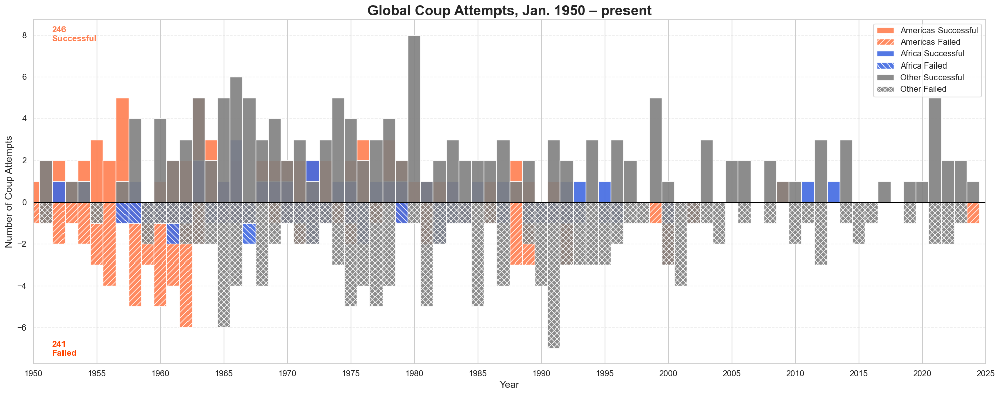
Figure 4.1 - Conflict-induced fatalities by region (ACLED)#
XX.
# %%
# jupyter: {'source_hidden': true}
# Initialize ACLED data fetcher
# Create date objects
# start_date = datetime(2013, 1, 1)
# end_date = datetime(2025, 1, 31)
# # Fetch raw data
# df_acled = acled.fetch_data(start_date, end_date)
# # Process the data
# df_acled_processed = acled.process_data(df_acled)
# # Get conflict-related deaths if needed
# df_acled_crd = acled.get_conflict_related_deaths(df_acled_processed)
# # Get event counts if needed
# df_acled_events = acled.get_event_counts(df_acled_processed)
def plot_acled_regional_deaths(df_acled_crd, region_mapper=None):
"""
Create a stacked area plot of ACLED conflict-related deaths by region
Parameters:
-----------
df_acled_crd : pd.DataFrame
DataFrame with columns: iso3, year, month, ACLED_conflict_related_deaths
region_mapper : RegionMapper, optional
Region mapping object (default creates a simple one)
Returns:
--------
matplotlib.pyplot
Stacked area plot of deaths by region
"""
import pycountry
if region_mapper is None:
region_mapper = RegionMapper()
# Comprehensive region mapping
region_mapping = {
'AFE': [ # Eastern Africa
'Kenya', 'Ethiopia', 'Uganda', 'Tanzania', 'Rwanda', 'Burundi',
'Somalia', 'South Sudan', 'Sudan', 'Eritrea', 'Djibouti'
],
'AFW': [ # Western Africa
'Nigeria', 'Ghana', 'Senegal', 'Mali', 'Burkina Faso', 'Guinea',
'Ivory Coast', 'Liberia', 'Sierra Leone', 'Togo', 'Benin', 'Niger',
'Gambia', 'Guinea-Bissau', 'Cape Verde'
],
'EAP': [ # East Asia & Pacific
'China', 'Japan', 'South Korea', 'Indonesia', 'Philippines', 'Vietnam',
'Thailand', 'Myanmar', 'Cambodia', 'Laos', 'Malaysia', 'Mongolia',
'Singapore', 'Papua New Guinea', 'Australia', 'New Zealand'
],
'ECA': [ # Europe & Central Asia
'Russia', 'Turkey', 'Ukraine', 'Kazakhstan', 'Uzbekistan', 'Georgia',
'Azerbaijan', 'Armenia', 'Moldova', 'Belarus', 'Poland', 'Romania',
'Bulgaria', 'Greece', 'Serbia', 'Croatia'
],
'MNA': [ # Middle East & North Africa
'Egypt', 'Iran', 'Iraq', 'Syria', 'Lebanon', 'Jordan', 'Palestine',
'Israel', 'Yemen', 'Saudi Arabia', 'United Arab Emirates', 'Algeria',
'Morocco', 'Tunisia', 'Libya', 'Bahrain', 'Kuwait', 'Oman', 'Qatar'
],
'SAR': [ # South Asia
'India', 'Pakistan', 'Bangladesh', 'Afghanistan', 'Nepal', 'Sri Lanka',
'Bhutan', 'Maldives'
]
}
def map_country_to_region(iso3):
try:
country_name = pycountry.countries.get(alpha_3=iso3).name
for region, countries in region_mapping.items():
if any(country.lower() in country_name.lower() for country in countries):
return region
return 'Other'
except (AttributeError, ValueError):
return 'Other'
# Create a copy of the DataFrame to avoid modifying the original
df = df_acled_crd.copy()
# Add region column
df['region'] = df['iso3'].apply(map_country_to_region)
# Group by year and region, sum deaths
yearly_region_deaths = df.groupby(['year', 'region'])['ACLED_conflict_related_deaths'].sum().unstack(fill_value=0)
# Ensure all regions are present
regions = ['AFE', 'AFW', 'EAP', 'ECA', 'MNA', 'SAR']
for region in regions:
if region not in yearly_region_deaths.columns:
yearly_region_deaths[region] = 0
# Select and order columns
yearly_region_deaths = yearly_region_deaths[regions]
# Filter for years 2013-2024
yearly_region_deaths = yearly_region_deaths.loc[2013:2024]
# Create the stacked area plot
plt.figure(figsize=(12, 6))
# Color palette matching the original figure
colors = {
'AFE': '#F4A460', # Sandy Brown
'AFW': '#808080', # Gray
'EAP': '#FFD700', # Gold
'ECA': '#87CEEB', # Sky Blue
'MNA': '#90EE90', # Light Green
'SAR': '#483D8B' # Dark Slate Blue
}
# Plot stacked area
plt.stackplot(yearly_region_deaths.index,
[yearly_region_deaths[region] for region in regions],
labels=regions,
colors=[colors[region] for region in regions])
# Styling
plt.title('ACLED Conflict-Related Deaths by Region', fontsize=16, pad=20)
plt.xlabel('Year', fontsize=12)
plt.ylabel('Number of Deaths', fontsize=12)
plt.xlim(2013, 2024)
plt.grid(True, alpha=0.3)
# Legend
plt.legend(title='Regions',
bbox_to_anchor=(1.02, 1),
loc='upper left',
frameon=True,
fontsize=10,
title_fontsize=12,
borderaxespad=0.)
# Format y-axis with thousands separator
plt.gca().yaxis.set_major_formatter(plt.FuncFormatter(lambda x, p: format(int(x), ',')))
plt.tight_layout()
return plt
# Create the plot
plot = plot_acled_regional_deaths(df_acled_crd)
plot.show()
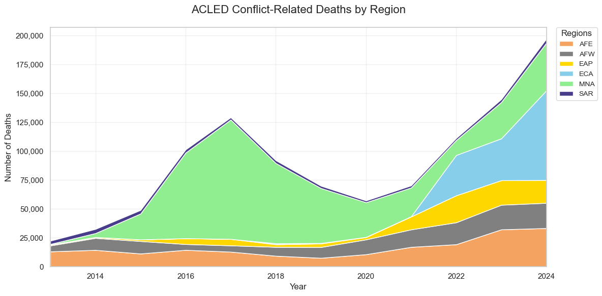
Figure 4.1.1 - Conflict-induced fatalities by income (ACLED)#
lend_group_path = os.path.join(data_dir, 'lend_group.xlsx')
def plot_acled_income_deaths(df_acled_crd, lend_group_path):
"""
Create a stacked area plot of ACLED conflict-related deaths by income group
Parameters:
-----------
df_acled_crd : pd.DataFrame
DataFrame with columns: iso3, year, month, ACLED_conflict_related_deaths
lend_group_path : str
Path to the lending group Excel file
Returns:
--------
matplotlib.pyplot
Stacked area plot of deaths by income group
"""
# Read lending group data
import pandas as pd
lend_group = pd.read_excel(lend_group_path)
# Create a copy of the DataFrame to avoid modifying the original
df = df_acled_crd.copy()
# Merge with lending group data
# Assuming 'Code' is the ISO3 code column in lend_group
df = df.merge(lend_group[['Code', 'Income group']],
left_on='iso3',
right_on='Code',
how='left')
# Fill missing income groups
df['Income group'] = df['Income group'].fillna('Not classified')
# Group by year and income group, sum deaths
yearly_income_deaths = df.groupby(
['year', 'Income group'])['ACLED_conflict_related_deaths'].sum().unstack(fill_value=0)
# Define income groups in desired order
income_groups = [
'High income',
'Upper middle income',
'Lower middle income',
'Low income',
'Not classified'
]
# Ensure all income groups are present
for group in income_groups:
if group not in yearly_income_deaths.columns:
yearly_income_deaths[group] = 0
# Select and order columns
yearly_income_deaths = yearly_income_deaths[income_groups]
# Filter for years 2013-2024
yearly_income_deaths = yearly_income_deaths.loc[2013:2024]
# Create the stacked area plot
plt.figure(figsize=(12, 6))
# Color palette for income groups
colors = {
'High income': '#2E86C1', # Blue
'Upper middle income': '#28B463', # Green
'Lower middle income': '#F39C12', # Orange
'Low income': '#C0392B', # Red
'Not classified': '#95A5A6' # Gray
}
# Plot stacked area
plt.stackplot(yearly_income_deaths.index,
[yearly_income_deaths[group] for group in income_groups],
labels=income_groups,
colors=[colors[group] for group in income_groups])
# Styling
plt.title('ACLED Conflict-Related Deaths by Income Group', fontsize=16, pad=20)
plt.xlabel('Year', fontsize=12)
plt.ylabel('Number of Deaths', fontsize=12)
plt.legend(title='Income Groups',
bbox_to_anchor=(1.05, 1),
loc='upper left',
frameon=True)
plt.xlim(2013, 2024)
plt.grid(True, alpha=0.3)
# Format y-axis with thousands separator
plt.gca().yaxis.set_major_formatter(plt.FuncFormatter(lambda x, p: format(int(x), ',')))
# Add summary statistics
total_deaths = yearly_income_deaths.sum().sum()
print(f"\nTotal conflict-related deaths (2013-2024): {total_deaths:,.0f}")
# Print percentage by income group
print("\nDistribution by income group:")
for group in income_groups:
group_total = yearly_income_deaths[group].sum()
percentage = (group_total / total_deaths) * 100
print(f"{group}: {group_total:,.0f} deaths ({percentage:.1f}%)")
plt.tight_layout()
return plt
plot = plot_acled_income_deaths(df_acled_crd, lend_group_path)
plot.show()
Total conflict-related deaths (2013-2024): 1,190,619
Distribution by income group:
High income: 13,358 deaths (1.1%)
Upper middle income: 283,870 deaths (23.8%)
Lower middle income: 300,919 deaths (25.3%)
Low income: 586,505 deaths (49.3%)
Not classified: 5,967 deaths (0.5%)
Figure 4.2 - Conflict-induced fatalities by type of conflict (UCDP)#
XX.
# %%
# jupyter: {'source_hidden': true}
def plot_fatalities(df: pd.DataFrame, output_path: Optional[str] = None) -> None:
"""
Create a stacked area plot of fatalities by violence type
Parameters:
-----------
df : pd.DataFrame
Processed fatalities data containing columns:
total_deaths_state_based, total_deaths_one_sided, total_deaths_non_state
output_path : str, optional
If provided, save the plot to this path
"""
# Create the figure
plt.figure(figsize=(12, 6))
# Extract data for each violence type
years = df.index
state_based = df['total_deaths_state_based']
one_sided = df['total_deaths_one_sided']
non_state = df['total_deaths_non_state']
# Create stacked area plot
plt.stackplot(years,
[state_based, one_sided, non_state],
labels=['State-based', 'One-sided', 'Non-state'],
colors=['#BDDC8D', '#2D9348', '#0D2818']) # Light green, Medium green, Dark green
# Customize the plot
plt.xlabel('')
plt.ylabel('Fatalities', rotation=90, labelpad=10)
# Format y-axis with thousands
plt.gca().yaxis.set_major_formatter(
plt.FuncFormatter(lambda x, p: f'{int(x):,}'))
# Add thousands separator to y-axis labels
current_values = plt.gca().get_yticks()
plt.gca().set_yticks(current_values)
# Customize grid (only horizontal lines)
plt.grid(axis='y', linestyle='-', alpha=0.1)
# Remove top and right spines
plt.gca().spines['top'].set_visible(False)
plt.gca().spines['right'].set_visible(False)
# Customize legend
plt.legend(loc='upper left', frameon=False)
# Adjust layout
plt.tight_layout()
# Save if output path is provided
if output_path:
plt.savefig(output_path, bbox_inches='tight', dpi=300)
print(f"Plot saved to {output_path}")
return plt
plot = plot_fatalities(fatalities_df)
plot.show()
print("✓ Figure 5 generated successfully")
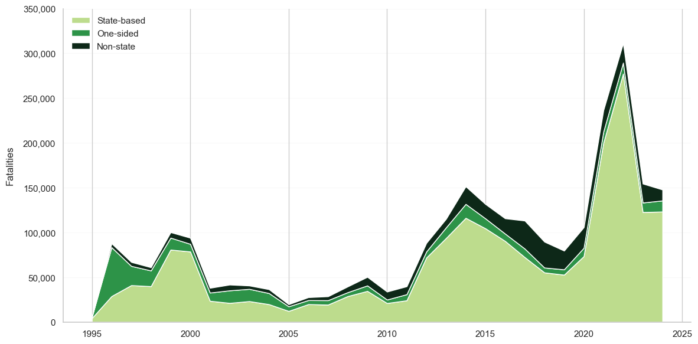
✓ Figure 5 generated successfully
Figure 4.3 - UCDP by income group#
XX.
# %%
# jupyter: {'source_hidden': true}
def plot_fatalities_by_income(data_dir: str):
"""
Create a stacked area plot of total fatalities by income group
Parameters:
-----------
data_dir : str
Directory containing both UCDP and lending group data
"""
# Construct file paths
ucdp_path = os.path.join(data_dir, 'ucdp.csv')
lend_group_path = os.path.join(data_dir, 'lend_group.xlsx')
# Read data
ucdp = pd.read_csv(ucdp_path, usecols=['iso3', 'year', 'UCDP_BRD'])
lend_group = pd.read_excel(lend_group_path)
# Merge datasets
df = ucdp.merge(lend_group[['Code', 'Income group']],
left_on='iso3',
right_on='Code',
how='left')
# Group by year and income group, sum fatalities
yearly_fatalities = df.groupby(['year', 'Income group'])['UCDP_BRD'].sum().reset_index()
# Pivot data for plotting
fatalities_pivot = yearly_fatalities.pivot(
index='year',
columns='Income group',
values='UCDP_BRD'
)
# Create the figure
plt.figure(figsize=(12, 6))
# Filter years between 1995 and 2024
fatalities_pivot = fatalities_pivot[(fatalities_pivot.index >= 1995) & (fatalities_pivot.index < 2025)]
years = fatalities_pivot.index
income_groups = ['High income', 'Upper middle income', 'Lower middle income', 'Low income']
# Filter and reorder columns based on income groups that exist in the data
available_groups = [group for group in income_groups if group in fatalities_pivot.columns]
fatalities_data = [fatalities_pivot[group].fillna(0) for group in available_groups]
# Define colors for income groups
colors = ['#BDDC8D', '#2D9348', '#0D2818', '#7CAE7A'] # Light green to dark green
# Create stacked area plot
plt.stackplot(years,
fatalities_data,
labels=available_groups,
colors=colors[:len(available_groups)])
# Customize the plot
plt.xlabel('')
plt.ylabel('Fatalities', rotation=90, labelpad=10)
# Format y-axis with thousands
plt.gca().yaxis.set_major_formatter(
plt.FuncFormatter(lambda x, p: f'{int(x):,}'))
# Add thousands separator to y-axis labels
current_values = plt.gca().get_yticks()
plt.gca().set_yticks(current_values)
# Customize grid (only horizontal lines)
plt.grid(axis='y', linestyle='-', alpha=0.1)
# Remove top and right spines
plt.gca().spines['top'].set_visible(False)
plt.gca().spines['right'].set_visible(False)
# Customize legend
plt.legend(loc='upper left', frameon=False)
# Adjust layout
plt.tight_layout()
return plt
plot = plot_fatalities_by_income(data_dir)
plot.show()
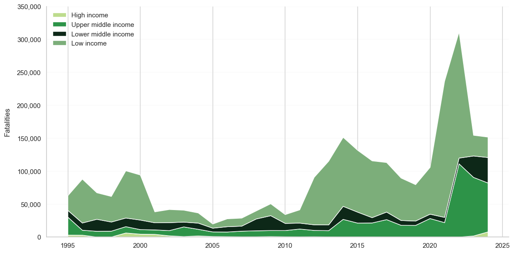
Figure 6 - Forcibly Displaced Persons#
XX.
# %%
# jupyter: {'source_hidden': true}
# Get processed data suitable for visualization
def prepare_data_for_plotting(df_unchr):
"""
Prepare the data for plotting by ensuring correct types and handling missing values
Parameters:
-----------
df_unchr : pd.DataFrame
Input DataFrame from UNHCR data
Returns:
--------
pd.DataFrame
Processed DataFrame ready for plotting
"""
# List of columns that should be numeric
numeric_cols = ['refugees_unhcr', 'asylum_seekers', 'other_protection',
'refugees_unrwa', 'idps']
# Create a copy to avoid modifying the original
plot_df = df_unchr.copy()
# Convert numeric columns and replace '-' with 0
for col in numeric_cols:
# Replace '-' with 0
if col in plot_df.columns:
plot_df[col] = plot_df[col].replace('-', 0)
# Convert to numeric, replacing errors with 0
plot_df[col] = pd.to_numeric(plot_df[col], errors='coerce').fillna(0)
return plot_df
def plot_forced_displacement(df_input, output_path=None):
"""
Create a stacked area plot of forced displacement data
Parameters:
-----------
df_input : pd.DataFrame
DataFrame containing columns: year, refugees_unhcr, asylum_seekers,
other_protection, refugees_unrwa, idps
output_path : str, optional
If provided, save the plot to this path
"""
# Prepare data
plot_df = prepare_data_for_plotting(df_input)
# Create the figure with specified size and extra space for legend
plt.figure(figsize=(12, 8))
# Get the years for x-axis
years = plot_df['year']
# Prepare the data arrays
idps = plot_df['idps'].values
refugees_unhcr = plot_df['refugees_unhcr'].values
refugees_unrwa = plot_df['refugees_unrwa'].values
asylum_seekers = plot_df['asylum_seekers'].values
other_protection = plot_df['other_protection'].values
# Create stacked area plot
plt.stackplot(years,
[idps, refugees_unhcr, refugees_unrwa, asylum_seekers, other_protection],
labels=['Internally displaced people',
'Refugees under UNHCR\'s mandate',
'Palestine refugees under UNRWA\'s mandate',
'Asylum-seekers',
'Other people in need of international protection'],
colors=['#4DB6AC', # Turquoise for IDPs
'#2196F3', # Blue for UNHCR refugees
'#90CAF9', # Light blue for UNRWA refugees
'#1A237E', # Dark blue for asylum seekers
'#EF5350']) # Red for other protection
# Customize the plot
plt.title('Number of Forcibly Displaced Persons | 2000 - 2024',
fontsize=14, pad=20)
plt.xlabel('Years', fontsize=12)
plt.ylabel('Population', fontsize=12)
# Format y-axis with millions
plt.gca().yaxis.set_major_formatter(
plt.FuncFormatter(lambda x, p: f'{int(x):,}'))
# Set x-axis ticks to show all years
plt.xticks(years, rotation=0)
# Customize grid
plt.grid(True, alpha=0.3)
# Position legend inside the plot at top left corner
plt.legend(loc='upper left',
bbox_to_anchor=(0.02, 0.98), # Fixed position at top left
ncol=2, # 2 columns
borderaxespad=0,
frameon=True, # Add frame around legend
fancybox=True, # Rounded corners
shadow=True, # Add shadow
fontsize=10) # Adjust font size
# Adjust layout to prevent label cutoff
plt.tight_layout()
# Save if output path is provided
if output_path:
plt.savefig(output_path, bbox_inches='tight', dpi=300)
return plt
# Get processed data suitable for visualization
df_unchr = unhcr.process_displacement_data(2000, 2024)
# Create the plot using df_unchr
plot = plot_forced_displacement(df_unchr)
plot.show()
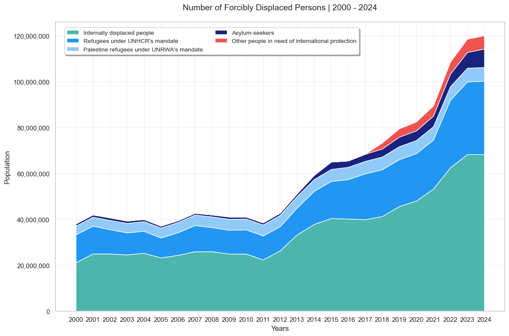
Table 1 - [PLACEHOLDER] Top origin/host refugees and IDPs countries#
XX.
from tabulate import tabulate
import pandas as pd
def display_refugee_analysis(stats_df, detailed_df, country_trends):
"""
Display comprehensive refugee and displacement analysis
Parameters:
-----------
stats_df : pd.DataFrame
Yearly statistical summary
detailed_df : pd.DataFrame
Detailed country-level data
country_trends : pd.DataFrame
Country-level refugee trends
"""
# Set display options
pd.set_option('display.float_format', lambda x: f'{x:,.0f}')
# Get the latest year
latest_year = detailed_df['year'].max()
latest_data = detailed_df[detailed_df['year'] == latest_year]
# Table 1: Top Refugee Origin Countries
print(f"\nTop 15 Refugee Origin Countries ({latest_year})")
print("=" * 60)
origin_data = latest_data.nlargest(15, 'refugees_originated')[
['country', 'refugees_originated', 'idps']
]
print(tabulate(origin_data, headers='keys', tablefmt='pretty', showindex=False))
# Table 2: Top Refugee Host Countries
print(f"\nTop 15 Refugee Host Countries ({latest_year})")
print("=" * 60)
host_data = latest_data.nlargest(15, 'refugees_hosted')[
['country', 'refugees_hosted', 'asylum_seekers_hosted']
]
print(tabulate(host_data, headers='keys', tablefmt='pretty', showindex=False))
# Table 3: Largest Changes in Refugee Numbers
print("\nLargest Changes in Refugee Numbers (2020-2022)")
print("=" * 60)
changes_data = country_trends.nlargest(10, 'refugees_change')[
['country', 'current_refugees', 'refugees_change']
]
print(tabulate(changes_data, headers='keys', tablefmt='pretty', showindex=False))
# Table 4: Yearly Displacement Statistics
print("\nYearly Displacement Statistics")
print("=" * 60)
print(tabulate(stats_df, headers='keys', tablefmt='pretty', showindex=False))
# Reset display options
pd.reset_option('display.float_format')
# Initialize the analyzer
analyzer = RefugeeAnalyzer()
try:
# Get historical analysis
print("Getting historical analysis for recent years...")
stats_df, detailed_df = analyzer.analyze_historical_trends(2020, 2022)
# Get country trends
country_trends = analyzer.get_country_trends(detailed_df)
# Display the analysis
display_refugee_analysis(stats_df, detailed_df, country_trends)
except Exception as e:
print(f"Error in analysis: {str(e)}")
Getting historical analysis for recent years...
Analyzing displacement trends from 2020 to 2022...
Processing year 2020...
Processing year 2021...
Processing year 2022...
Top 15 Refugee Origin Countries (2022)
============================================================
+------------------------+---------------------+------+
| country | refugees_originated | idps |
+------------------------+---------------------+------+
| Afghanistan | 5661717.0 | 0.0 |
| Central African Rep. | 748344.0 | 0.0 |
| Burundi | 320702.0 | 0.0 |
| China | 92855.0 | 0.0 |
| Azerbaijan | 42116.0 | 0.0 |
| Burkina Faso | 29914.0 | 0.0 |
| Egypt | 24390.0 | 0.0 |
| Bangladesh | 23935.0 | 0.0 |
| Albania | 20865.0 | 0.0 |
| Bosnia and Herzegovina | 19466.0 | 0.0 |
| Armenia | 14868.0 | 0.0 |
| Chad | 12811.0 | 0.0 |
| Angola | 12021.0 | 0.0 |
| Cambodia | 11700.0 | 0.0 |
| Belarus | 11598.0 | 0.0 |
+------------------------+---------------------+------+
Top 15 Refugee Host Countries (2022)
============================================================
+--------------------------+-----------------+-----------------------+
| country | refugees_hosted | asylum_seekers_hosted |
+--------------------------+-----------------+-----------------------+
| Iran (Islamic Rep. of) | 3413249.0 | 0.0 |
| Pakistan | 1743300.0 | 38108.0 |
| Cameroon | 348266.0 | 7029.0 |
| Dem. Rep. of the Congo | 255147.0 | 1567.0 |
| Germany | 200647.0 | 46534.0 |
| United Rep. of Tanzania | 155307.0 | 8976.0 |
| France | 149291.0 | 25510.0 |
| Chad | 124535.0 | 2384.0 |
| India | 82160.0 | 5197.0 |
| Rwanda | 48382.0 | 53.0 |
| Austria | 47243.0 | 8881.0 |
| Uganda | 39183.0 | 1540.0 |
| Greece | 36988.0 | 7100.0 |
| United States of America | 35765.0 | 105817.0 |
| Sudan | 29052.0 | 32.0 |
+--------------------------+-----------------+-----------------------+
Largest Changes in Refugee Numbers (2020-2022)
============================================================
+--------------+------------------+--------------------+
| country | current_refugees | refugees_change |
+--------------+------------------+--------------------+
| Belarus | 11598.0 | 269.4807263459701 |
| Canada | 186.0 | 186.15384615384616 |
| Austria | 41.0 | 127.77777777777777 |
| Afghanistan | 5661717.0 | 118.1924652394938 |
| Argentina | 194.0 | 95.95959595959596 |
| Burkina Faso | 29914.0 | 90.60787562125653 |
| Australia | 36.0 | 80.0 |
| Brazil | 2740.0 | 77.00258397932816 |
| Algeria | 7734.0 | 69.1971122292715 |
| Bulgaria | 790.0 | 54.90196078431373 |
+--------------+------------------+--------------------+
Yearly Displacement Statistics
============================================================
+----------------+----------------------+------------+--------------------+----------------------+--------------------+--------+
| total_refugees | total_asylum_seekers | total_idps | total_displacement | num_origin_countries | num_host_countries | year |
+----------------+----------------------+------------+--------------------+----------------------+--------------------+--------+
| 4046536.0 | 599003.0 | 0.0 | 4645539.0 | 35.0 | 136.0 | 2020.0 |
| 4164852.0 | 657728.0 | 0.0 | 4822580.0 | 35.0 | 138.0 | 2021.0 |
| 7068671.0 | 672856.0 | 0.0 | 7741527.0 | 35.0 | 137.0 | 2022.0 |
+----------------+----------------------+------------+--------------------+----------------------+--------------------+--------+
Figure 7 - Global Organized Crime#
XX.
# %%
# jupyter: {'source_hidden': true}
import pandas as pd
import matplotlib.pyplot as plt
import ipywidgets as widgets
from IPython.display import display, clear_output
def create_interactive_crime_plot(file_path):
"""
Create an interactive scatter plot with dropdown menus for selecting metrics
Parameters:
-----------
file_path : str
Path to the Excel file containing the dataset
"""
# Read the Excel file
df = pd.read_excel(file_path, sheet_name='2023_dataset')
# Get list of numeric columns for dropdowns
exclude_cols = ['Country', 'Continent', 'Region']
numeric_cols = [col for col in df.columns if col not in exclude_cols]
# Create dropdown widgets
x_dropdown = widgets.Dropdown(
options=numeric_cols,
value='Criminality avg,',
description='X-axis:',
style={'description_width': 'initial'},
layout={'width': 'auto'}
)
y_dropdown = widgets.Dropdown(
options=numeric_cols,
value='Resilience avg,',
description='Y-axis:',
style={'description_width': 'initial'},
layout={'width': 'auto'}
)
def plot_scatter(x_metric, y_metric):
"""Create the scatter plot with the selected metrics"""
plt.figure(figsize=(12, 8))
# Color the quadrants
plt.axvline(x=5, color='black', linestyle='--', linewidth=1)
plt.axhline(y=5, color='black', linestyle='--', linewidth=1)
# Fill quadrants with semi-transparent colors
plt.fill_between([0, 5], 5, 10, color='green', alpha=0.1) # Top-left
plt.fill_between([5, 10], 5, 10, color='red', alpha=0.1) # Top-right
plt.fill_between([0, 5], 0, 5, color='blue', alpha=0.1) # Bottom-left
plt.fill_between([5, 10], 0, 5, color='pink', alpha=0.1) # Bottom-right
# Color mapping for continents
continent_colors = {
'Africa': 'orange',
'Americas': 'green',
'Asia': 'red',
'Europe': 'blue',
'Oceania': 'gray'
}
# Create scatter plot
for continent in df['Continent'].unique():
subset = df[df['Continent'] == continent]
plt.scatter(subset[x_metric], subset[y_metric],
c=continent_colors[continent],
label=continent,
alpha=0.7)
# Add country labels
for _, row in df.iterrows():
plt.annotate(row['Country'],
(row[x_metric], row[y_metric]),
xytext=(5, 5),
textcoords='offset points',
fontsize=8,
alpha=0.7)
# Customize the plot
plt.title(f'Global Organized Crime Index: {x_metric} vs {y_metric}',
fontsize=16)
plt.xlabel(x_metric, fontsize=12)
plt.ylabel(y_metric, fontsize=12)
plt.xlim(0, 10)
plt.ylim(0, 10)
plt.grid(True, linestyle='--', alpha=0.7)
plt.legend(bbox_to_anchor=(1.05, 1), loc='upper left')
plt.tight_layout()
plt.show()
def update_plot(*args):
"""Callback function to update the plot when dropdowns change"""
clear_output(wait=True)
# Display dropdowns
display(widgets.HBox([x_dropdown, y_dropdown]))
# Create new plot
plot_scatter(x_dropdown.value, y_dropdown.value)
# Set up the callback
x_dropdown.observe(update_plot, 'value')
y_dropdown.observe(update_plot, 'value')
# Initial plot
update_plot()
# Example usage
if __name__ == '__main__':
file_path = os.path.join(data_dir, 'global_oc_index.xlsx')
create_interactive_crime_plot(file_path)
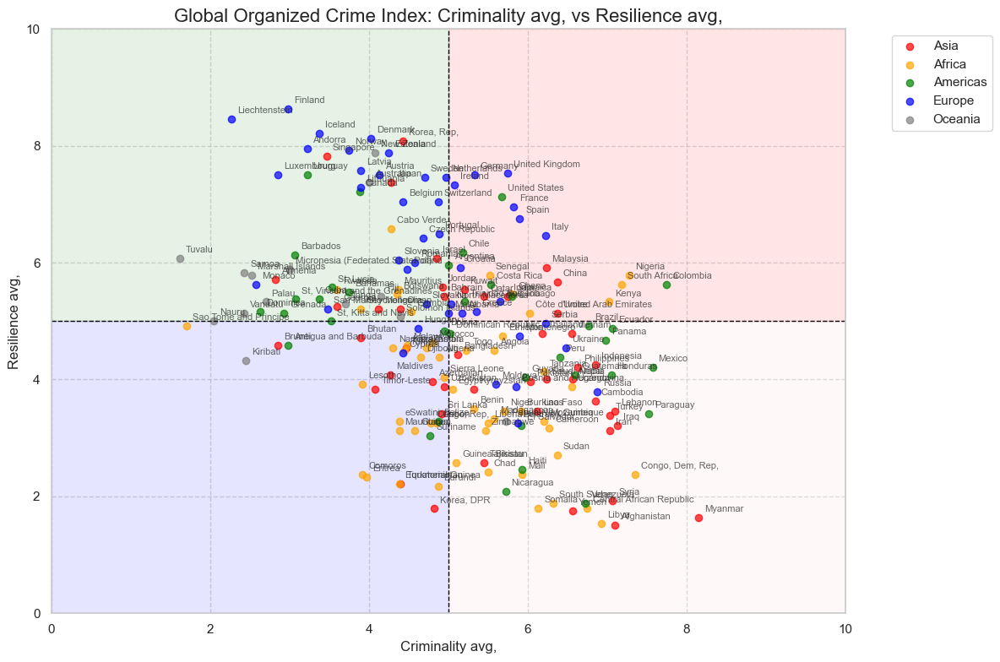
Figure 8 - Projected WB Population#
XX.
# %%
# jupyter: {'source_hidden': true}
# # Initialize the API client
# api_client = UNPopulationDataPortalAPI()
# # Test API connection
# if not api_client.test_api_connection():
# logger.error("Unable to establish API connection.")
# sys.exit(1)
# try:
# # Retrieve country IDs
# country_ids = api_client.get_country_ids()
# logger.info(f"Total Countries Retrieved: {len(country_ids)}")
# logger.info("First 10 Country IDs: %s", country_ids[:10])
# except Exception as e:
# logger.error(f"An error occurred: {e}")
def plot_population_trends_by_lending(data_dir, end_year=2050):
"""
Create stacked area chart of total population by lending group
"""
# Read data
file_path = os.path.join(data_dir, 'un_pop_data.xlsx')
lend_group_path = os.path.join(data_dir, 'lend_group.xlsx')
df = pd.read_excel(file_path, sheet_name='Medium variant')
lending_df = pd.read_excel(lend_group_path)
# Process data
df = df.dropna(subset=['ISO3 Alpha-code'])
df['Total Population, as of 1 January (thousands)'] = pd.to_numeric(
df['Total Population, as of 1 January (thousands)'],
errors='coerce'
)
# Merge with lending group data
df = df.merge(lending_df[['Code', 'Lending category', 'Economy']],
left_on='ISO3 Alpha-code',
right_on='Code',
how='left')
# Clear previous plots
plt.clf()
# Create figure and axis
fig, ax = plt.subplots(figsize=(12, 6))
# Color mapping
color_map = {
'IBRD': '#4472C4', # Royal blue
'Blend': '#7CAFDD', # Lighter blue
'IDA': '#A5A5A5' # Gray
}
# Create pivot table for stacked area
lending_group_pop = df.pivot_table(
index='Year',
columns='Lending category',
values='Total Population, as of 1 January (thousands)',
aggfunc='sum'
)
# Filter data up to end_year
lending_group_pop = lending_group_pop[lending_group_pop.index <= end_year]
# Create stacked area plot
lending_group_pop.plot(
kind='area',
stacked=True,
ax=ax,
color=[color_map.get(cat, '#1F77B4') for cat in lending_group_pop.columns],
alpha=0.7
)
# Customize plot
ax.set_xlim(lending_group_pop.index.min(), end_year)
ax.set_title('Total Population by Lending Group', fontsize=14, pad=20)
ax.set_xlabel('Year', fontsize=12)
ax.set_ylabel('Population (millions)', fontsize=12)
# Format y-axis with millions
ax.yaxis.set_major_formatter(plt.FuncFormatter(lambda x, p: f'{int(x/1000):,}'))
# Rotate x-axis labels
plt.setp(ax.get_xticklabels(), rotation=45, ha='right')
# Add legend
handles = [plt.Rectangle((0,0),1,1, color=color) for color in color_map.values()]
labels = list(color_map.keys())
ax.legend(handles, labels, loc='upper left')
ax.grid(True, alpha=0.3)
plt.tight_layout()
plt.show()
def plot_population_change_by_country(data_dir, start_year=2024, top_n=12):
"""
Create horizontal bar chart of population change by country
"""
# Read data
file_path = os.path.join(data_dir, 'un_pop_data.xlsx')
lend_group_path = os.path.join(data_dir, 'lend_group.xlsx')
df = pd.read_excel(file_path, sheet_name='Medium variant')
lending_df = pd.read_excel(lend_group_path)
# Process data
df = df.dropna(subset=['ISO3 Alpha-code'])
df['Total Population, as of 1 January (thousands)'] = pd.to_numeric(
df['Total Population, as of 1 January (thousands)'],
errors='coerce'
)
# Merge with lending group data
df = df.merge(lending_df[['Code', 'Lending category', 'Economy']],
left_on='ISO3 Alpha-code',
right_on='Code',
how='left')
# Calculate population change
pop_start = df[df['Year'] == start_year].set_index('ISO3 Alpha-code')['Total Population, as of 1 January (thousands)']
pop_2050 = df[df['Year'] == 2050].set_index('ISO3 Alpha-code')['Total Population, as of 1 January (thousands)']
pop_change = (pop_2050 - pop_start) / 1000 # Convert to millions
# Add population change to 2050 data
df_2050 = df[df['Year'] == 2050].copy()
df_2050['Population Change (millions)'] = df_2050['ISO3 Alpha-code'].map(pop_change)
# Clear previous plots
plt.clf()
# Create figure
fig, ax = plt.subplots(figsize=(12, 8))
# Color mapping
color_map = {
'IBRD': '#4472C4', # Royal blue
'Blend': '#7CAFDD', # Lighter blue
'IDA': '#A5A5A5' # Gray
}
# Get top changes
top_changes = df_2050.nlargest(top_n, 'Population Change (millions)').sort_values('Population Change (millions)')
# Create horizontal bar chart
bars = ax.barh(
range(len(top_changes)),
top_changes['Population Change (millions)'],
color=[color_map.get(cat, '#1F77B4') for cat in top_changes['Lending category']]
)
# Customize plot
ax.invert_yaxis()
ax.set_title(f'Population Change {start_year}-2050 (millions)', fontsize=14, pad=20)
ax.set_xlabel('Population Change (millions)', fontsize=12)
ax.set_yticks(range(len(top_changes)))
ax.set_yticklabels(top_changes['Economy'], fontsize=10)
# Add value labels on bars
for bar in bars:
width = bar.get_width()
ax.text(width + 0.5, # x position with offset
bar.get_y() + bar.get_height()/2, # y position
f'{width:,.1f}M', # text
ha='left', # horizontal alignment
va='center', # vertical alignment
fontsize=10) # font size
# Add legend
handles = [plt.Rectangle((0,0),1,1, color=color) for color in color_map.values()]
labels = list(color_map.keys())
ax.legend(handles, labels, loc='upper right')
# Add grid
ax.grid(True, axis='x', linestyle='--', alpha=0.3)
plt.tight_layout()
plt.show()
if __name__ == "__main__":
# Create and display both plots
plot_population_trends_by_lending(data_dir)
plot_population_change_by_country(data_dir)
<Figure size 640x480 with 0 Axes>
<Figure size 640x480 with 0 Axes>
Figure 9.1 - Mortality Rate#
XX.
# %%
# jupyter: {'source_hidden': true}
# FCS countries list
FCS_COUNTRIES = [
'Afghanistan', 'Burkina Faso', 'Cameroon', 'Central African Republic',
'Congo, Dem. Rep.', 'Ethiopia', 'Haiti', 'Iraq', 'Lebanon', 'Mali',
'Mozambique', 'Myanmar', 'Niger', 'Nigeria', 'Somalia', 'South Sudan',
'Sudan', 'Syrian Arab Republic', 'Ukraine', 'West Bank and Gaza',
'Yemen, Rep.', 'Burundi', 'Chad', 'Comoros', 'Congo, Rep.', 'Eritrea',
'Guinea-Bissau', 'Kiribati', 'Kosovo', 'Libya', 'Marshall Islands',
'Micronesia, Fed. Sts.', 'Papua New Guinea', 'São Tomé and Principe',
'Solomon Islands', 'Timor-Leste', 'Tuvalu', 'Venezuela, RB', 'Zimbabwe'
]
def get_country_averages(wb_data, countries=None):
"""Helper function to calculate averages for a group of countries"""
df = pd.DataFrame(wb_data)
if countries:
df = df[df['country'].isin(countries)]
return df.groupby('date')['SH.DYN.MORT'].mean()
def plot_mortality_rate(wb_data):
"""
Plot under-5 mortality rate
Indicator: SH.DYN.MORT
"""
fig, ax = plt.subplots(figsize=(10, 6))
# Reshape data for plotting
df = pd.DataFrame(wb_data)
# Calculate world average (using all countries)
world_data = get_country_averages(wb_data)
# Calculate FCS average
fcs_data = get_country_averages(wb_data, FCS_COUNTRIES)
# Plot
ax.plot(world_data.index, world_data.values, color='#4472C4', label='World')
ax.plot(fcs_data.index, fcs_data.values, color='#ED7D31', label='FCS')
# Customize
ax.set_title('Mortality rate, under 5 (per 1,000 live births)', pad=20)
ax.set_xlabel('Year')
ax.set_ylabel('per 1,000 live births')
ax.grid(True, axis='y', linestyle='--', alpha=0.7)
ax.legend()
# Adjust y-axis range
ax.set_ylim(0, 140)
return fig
mortality_data = wb.get_indicator_data(indicator='SH.DYN.MORT', start_year=2000, end_year=2024)
fig = plot_mortality_rate(mortality_data)
plt.show()
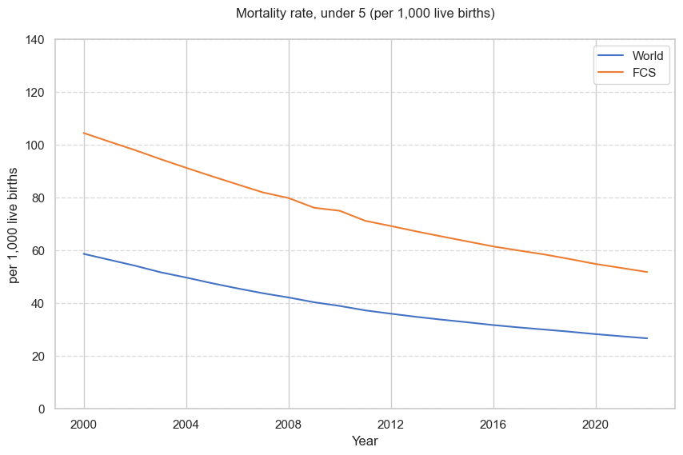
Figure 9.2 - Primary Completion Rate#
XX.
# %%
# jupyter: {'source_hidden': true}
def plot_primary_completion(wb_data):
"""
Plot primary completion rate
Indicator: SE.PRM.CMPT.ZS
"""
fig, ax = plt.subplots(figsize=(10, 6))
# Reshape data
df = pd.DataFrame(wb_data)
# Calculate averages
world_data = df.groupby('date')['SE.PRM.CMPT.ZS'].mean()
fcs_data = df[df['country'].isin(FCS_COUNTRIES)].groupby('date')['SE.PRM.CMPT.ZS'].mean()
# Plot
ax.plot(world_data.index, world_data.values, color='#4472C4', label='World')
ax.plot(fcs_data.index, fcs_data.values, color='#ED7D31', label='FCS')
# Customize
ax.set_title('Primary completion rate, total (% of relevant age group)', pad=20)
ax.set_xlabel('Year')
ax.set_ylabel('% of relevant age group')
ax.grid(True, axis='y', linestyle='--', alpha=0.7)
ax.legend()
ax.set_ylim(0, 100)
return fig
# Get data and plot
primary_data = wb.get_indicator_data(indicator='SE.PRM.CMPT.ZS', start_year=2000, end_year=2024)
fig = plot_primary_completion(primary_data)
plt.show()
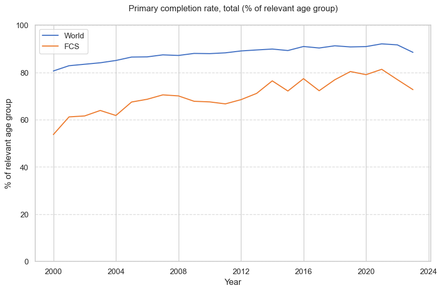
Figure 9.3 - Sanitation#
XX.
# %%
# jupyter: {'source_hidden': true}
def plot_sanitation(wb_data):
"""
Plot basic sanitation services
Indicator: SH.STA.BASS.ZS
"""
fig, ax = plt.subplots(figsize=(10, 6))
# Reshape data
df = pd.DataFrame(wb_data)
# Calculate averages
world_data = df.groupby('date')['SH.STA.BASS.ZS'].mean()
fcs_data = df[df['country'].isin(FCS_COUNTRIES)].groupby('date')['SH.STA.BASS.ZS'].mean()
# Plot
ax.plot(world_data.index, world_data.values, color='#4472C4', label='World')
ax.plot(fcs_data.index, fcs_data.values, color='#ED7D31', label='FCS')
# Customize
ax.set_title('People using at least basic sanitation services (% of population)', pad=20)
ax.set_xlabel('Year')
ax.set_ylabel('% of population')
ax.grid(True, axis='y', linestyle='--', alpha=0.7)
ax.legend()
ax.set_ylim(0, 100)
return fig
# Get data and plot
sanitation_data = wb.get_indicator_data(indicator='SH.STA.BASS.ZS', start_year=2000, end_year=2024)
fig = plot_sanitation(sanitation_data)
plt.show()
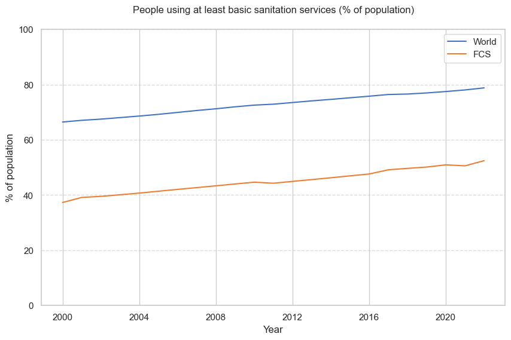
Figure 9.4 - Basic Drink Water#
XX.
# %%
# jupyter: {'source_hidden': true}
def plot_water_services(wb_data):
"""
Plot basic drinking water services
Indicator: SH.H2O.BASW.ZS
"""
fig, ax = plt.subplots(figsize=(10, 6))
# Reshape data
df = pd.DataFrame(wb_data)
# Calculate averages
world_data = df.groupby('date')['SH.H2O.BASW.ZS'].mean()
fcs_data = df[df['country'].isin(FCS_COUNTRIES)].groupby('date')['SH.H2O.BASW.ZS'].mean()
# Plot
ax.plot(world_data.index, world_data.values, color='#4472C4', label='World')
ax.plot(fcs_data.index, fcs_data.values, color='#ED7D31', label='FCS')
# Customize
ax.set_title('People using at least basic drinking water services (% of population)', pad=20)
ax.set_xlabel('Year')
ax.set_ylabel('% of population')
ax.grid(True, axis='y', linestyle='--', alpha=0.7)
ax.legend()
ax.set_ylim(0, 100)
return fig
# Get data and plot
water_data = wb.get_indicator_data(indicator='SH.H2O.BASW.ZS', start_year=2000, end_year=2024)
fig = plot_water_services(water_data)
plt.show()
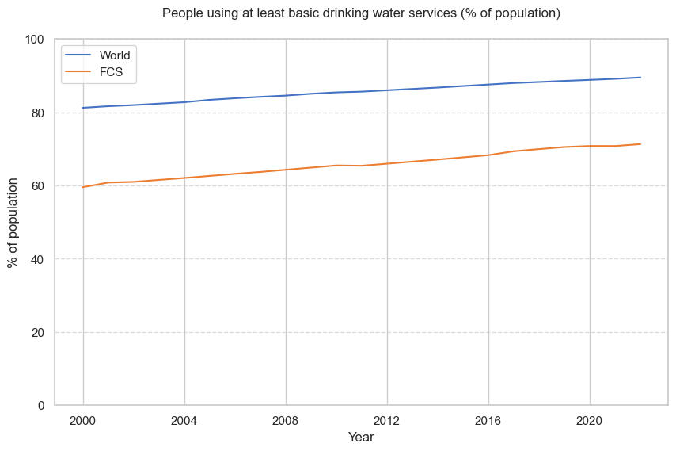
Figure XX - [PLACEHOLDER] Fragility#
Create a scatter plot with connecting lines showing changes in fragility scores based on different measures.
# %%
# jupyter: {'source_hidden': true}
# World Bank API
# Get CPIA data for for all countires from 2015 to 2024
# cpia_data = wb.get_indicator_data(
# country_code=None, # None means all countries
# indicator='IQ.CPA.IRAI.XQ',
# start_year=2015,
# end_year=2024
# )
# # Print the results
# print(cpia_data)
# try:
# processor = FSIDataProcessor(
# source_dir= source_dir, # Make sure this path is correct
# output_dir="" # This directory can be empty if you're not saving
# )
# # Process the data
# monthly_data = processor.process_fsi_data()
# # Initialize the classifier
# classifier = FragilityClassifier(data_dir=data_dir)
# # Get classifications for a specific year
# classifications_2022 = classifier.get_classification(2022)
# print(classifications_2022)
# print("Extremely fragile countries in 2022:", classifications_2022['extreme'])
# Create a scatter plot with connecting lines showing changes in fragility scores based on OECD metrics
def create_fragility_plot():
fig, ax = plt.subplots(figsize=(12, 6))
fragility = [100, 102, 104, 106, 108, 110, 112, 115, 118, 120,
123, 125, 128, 130, 133, 135, 138, 140, 143, 145,
148, 150, 153, 155, 158, 160, 163, 165, 168, 170, 173]
# Create scatter plot with gradient
points = ax.scatter(years, fragility, c=fragility,
cmap='YlOrRd', s=100)
ax.plot(years, fragility, color='#FFA500', linewidth=2)
# Add colorbar
plt.colorbar(points, label='Fragility Intensity')
# Customize appearance
ax.set_xlabel("Year", fontsize=12, fontweight='bold')
ax.set_ylabel("Fragility Score (OECD)", fontsize=12, fontweight='bold')
ax.set_title("Evolution of Global Fragility Scores (1990-2020)",
fontsize=14, fontweight='bold', pad=20)
plt.tight_layout()
return fig
# Generate and display the plot
fig5 = create_fragility_plot()
plt.show()
print("✓ Figure 5 generated successfully")
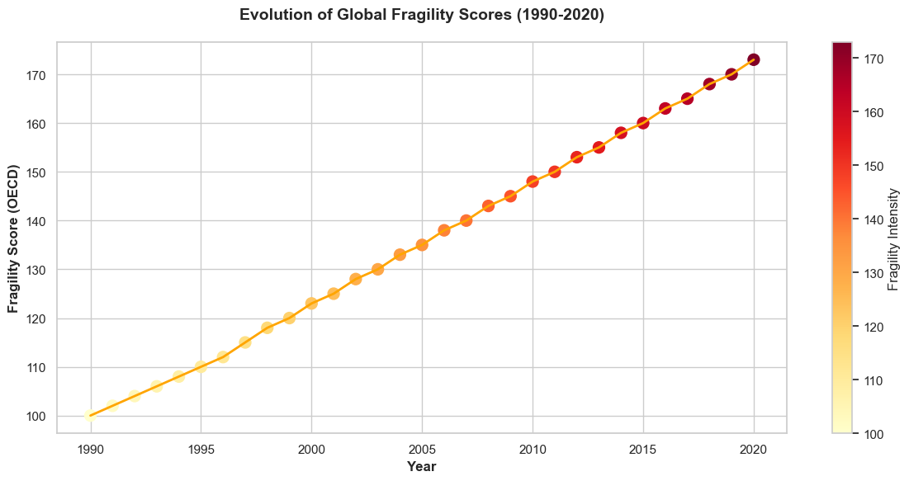
✓ Figure 5 generated successfully